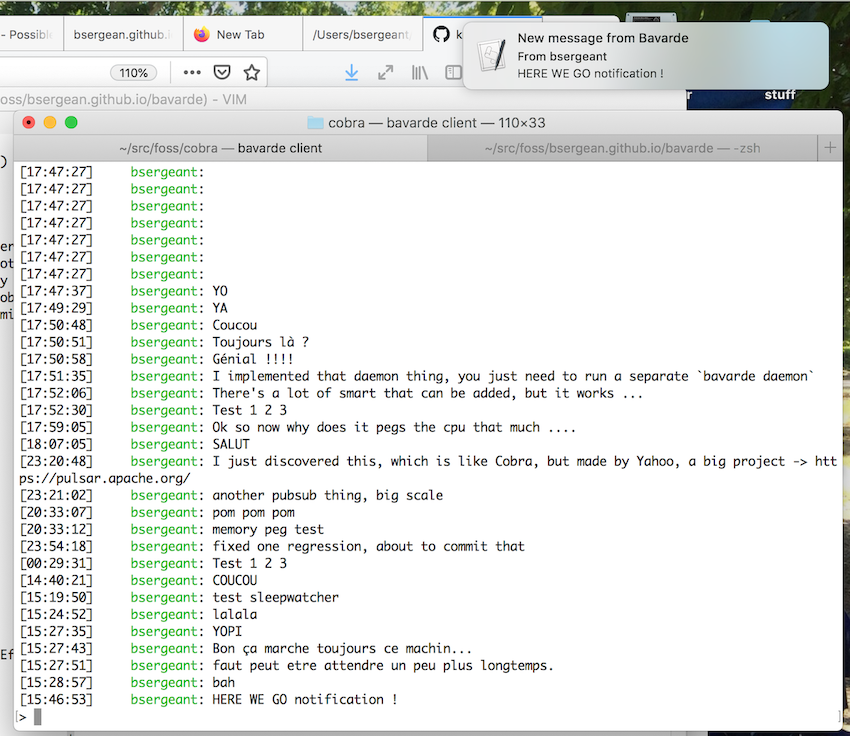

# Chat like a nerd
The bavarde chat client, coming with [cobra](https://github.com/machinezone/cobra/) got some improvements.
## It works (tm)
First thing, it works. For the longuest time the server hosting the cobra server was down. It ran on GCP (google cloud platform), then Openshift, but I could not figure out the reverse proxy on openshift, so I was still using GCP, only to proxy to Openshift, pretty silly. Running on GCP turned out to be a bit overkill for a hobby chat, and not as cheap as I wished. So I abandonned it for multiple months, but then was motivated enough to bring it back. Now it is running 'old school' on a Linode micro box, which is plenty enough for now. I love Linode. I picked Alpine Linux 3.11 as the distro.
### Security note
Dont forget to harden your SSH access after setting up your machine ; as one of the Linode folk said, the internet is a wild place. I left that for later ... and got a notification from the Linode support that my machine had been used for port scanning ... :( Here are some [steps](https://www.linode.com/docs/security/securing-your-server/) to follow to secure a server.
## TLS aka SSL
```
$ curl https://jeanserge.com
___ _
/ __\___ | |__ _ __ __ _
/ / / _ \| '_ \| '__/ _` |
/ /__| (_) | |_) | | | (_| |
\____/\___/|_.__/|_| \__,_|
Cobra is a realtime messaging server using Python3, WebSockets and Redis.
Version 2.9.7
Running on localhost
Start time 2020-04-21 05:17:21
$ cobra health --endpoint wss://jeanserge.com --rolesecret ccc02DE4Ed8CAB9aEfC8De3e13BfBE5E --rolename pubsub --appkey _pubsub
Client version: 2.9.11
Server version: 2.9.7
System is healthy
```
I configured TLS properly for the first time on a server of mine. I got the certificate using letsencrypt. The way it works is that you need to store a file somewhere on a path accessible by an http server (nginx in my case), and a remote server will try to fetch it to make sure you really own a host. This is driven by a tool called cerbot. There is more automation but the manual mode will just give you a certificate available for 3 months I believe.
Cobra, which is a websocket server, is running behind nginx which handles the TLS encryption. I use a normal redis instance.
## OS notifications

Those are provided through a python module named [klaxon](https://github.com/knowsuchagency/klaxon). It is the little popup that shows up in the right hand side.
## Daemon
To get those notification, you need to run a daemon (`bavarde daemon`) which will fork twice and be dettached from your terminal. This also thanks to a nice python module that does the hard work for you.
### Sleepwatcher
However I wasn't sure on how the daemon would work when my laptop goes to sleep ; it sounds safer to restart it when the computer wake up, and stop it when it goes to sleep. The downside is that if a message is received while I'm away I won't know about it, unless I add something in the protocol to 'mark' messages as read somehow. Googling for a Python module didn't get me anywhere (I found some gist that required to use pyobjc ... too much dependencies). Instead I'm using a little package named sleepwatcher, available through homebrew.
```
$ brew install sleepwatcher
==> Downloading https://homebrew.bintray.com/bottles/sleepwatcher-2.2.1.catalina.bottle.tar.gz
######################################################################## 100.0%
==> Pouring sleepwatcher-2.2.1.catalina.bottle.tar.gz
==> Caveats
For SleepWatcher to work, you will need to read the following:
/usr/local/opt/sleepwatcher/ReadMe.rtf
Ignore information about installing the binary and man page,
but read information regarding setup of the launchd files which
are installed here:
/usr/local/opt/sleepwatcher/de.bernhard-baehr.sleepwatcher-20compatibility-localuser.plist
/usr/local/opt/sleepwatcher/de.bernhard-baehr.sleepwatcher-20compatibility.plist
These are the examples provided by the author.
To have launchd start sleepwatcher now and restart at login:
brew services start sleepwatcher
==> Summary
🍺 /usr/local/Cellar/sleepwatcher/2.2.1: 9 files, 60.4KB
```
I just need to edit the local user one.
```
brew services start sleepwatcher
```
Then I created a ~/.wakeup and a ~/.sleep file. The wakeup script will kill the existing bavarde daemon, if any, and start a fresh one. The sleep script will kill the existing daemon.
```sh
#!/bin/sh
#
# Wake up scripts, only used by bavarde / cobra
#
# Set path
export PATH=$HOME/src/foss/cobra/venv/bin:$PATH
# We should log all actions for debugging
LOG_FILE=/tmp/sleepwatcher.my.log
echo "WAKING UP at `date`" >> $LOG_FILE
echo >> $LOG_FILE
# list Python processes
echo >> $LOG_FILE
echo "Python processes before daemon restart..." >> $LOG_FILE
echo >> $LOG_FILE
ps -ef | grep Python >> $LOG_FILE
# Kill the daemon, if any
echo "killing python up at `date`" >> $LOG_FILE
kill -9 `cat /tmp/bavarde.pid`
# Sleep
sleep 1
# Restart the daemon
bavarde daemon
# Sleep
sleep 1
# Look at processes
echo >> $LOG_FILE
echo "Python processes after daemon restart..." >> $LOG_FILE
echo >> $LOG_FILE
ps -ef | grep Python >> $LOG_FILE
echo "done\n" >> $LOG_FILE
```
## CPU running wild
My machine was getting warm, and I had a hard time figuring out why ; it turns
out I had a very busy loop which could be rewritten a different way ... I have
spent a lot of time in that code and I can't seem to get code that can receive
a lot of messages fast, without pegging the CPU and having a predictable memory
usage. I discovered that by using a new out of process python profiler named
[py-spy](https://pypi.org/project/py-spy/), written in Rust. I could not run
this one on Alpine unfortunately, as dealing with rust, or linux manywheel
package and musl is usually a headache.
Here is the [bug
fix](https://github.com/machinezone/cobra/commit/db7691f593a8eeac99a65d0dd8582fcc63de52d1)
for those interested in asyncio. We can see that we are spending a lot of time inside *getActionResponse*. The py-spy output is super helpful, it is similar to the Linux perf tool, or plain old UNIX top.
```
Collecting samples from '/opt/bitnami/python/bin/python /usr/bin/bavarde client --channel dadelante' (python v3.7.7)
Total Samples 7400
GIL: 0.00%, Active: 100.00%, Threads: 2
%Own %Total OwnTime TotalTime Function (filename:line)
31.00% 100.00% 23.15s 74.00s run (threading.py:870)
13.00% 13.00% 9.63s 9.63s sleep (asyncio/tasks.py:593)
11.00% 11.00% 8.31s 8.31s sleep (asyncio/tasks.py:589)
9.00% 9.00% 5.90s 5.90s _set_result_unless_cancelled (asyncio/futures.py:291)
9.00% 48.00% 5.75s 33.26s getActionResponse (cobras/client/connection.py:154)
3.00% 3.00% 3.73s 3.73s sleep (asyncio/tasks.py:595)
1.00% 5.00% 2.49s 6.49s getActionResponse (cobras/client/connection.py:150)
2.00% 2.00% 2.23s 2.23s get_nowait (asyncio/queues.py:182)
3.00% 3.00% 2.06s 2.06s sleep (asyncio/tasks.py:590)
4.00% 4.00% 1.59s 1.59s sleep (asyncio/tasks.py:597)
2.00% 2.00% 1.52s 1.52s getActionResponse (cobras/client/connection.py:159)
1.00% 2.00% 1.18s 1.74s get_nowait (asyncio/queues.py:181)
1.00% 1.00% 1.05s 1.05s getActionResponse (cobras/client/connection.py:156)
1.00% 1.00% 1.01s 1.01s getActionResponse (cobras/client/connection.py:153)
2.00% 2.00% 0.900s 0.900s sleep (asyncio/tasks.py:584)
1.00% 1.00% 0.880s 0.880s sleep (asyncio/tasks.py:592)
3.00% 3.00% 0.730s 0.730s _set_result_unless_cancelled (asyncio/futures.py:289)
1.00% 1.00% 0.520s 0.520s empty (asyncio/queues.py:98)
0.00% 57.00% 0.500s 44.20s unsafeSubcribeClient (cobras/client/client.py:168)
0.00% 57.00% 0.330s 43.70s subscribe (cobras/client/connection.py:234)
2.00% 2.00% 0.240s 0.240s sleep (asyncio/tasks.py:591)
0.00% 0.00% 0.230s 0.230s client (cobras/bavarde/runner/client.py:85)
0.00% 0.00% 0.120s 0.120s sleep (asyncio/tasks.py:588)
0.00% 0.00% 0.040s 0.040s sleep (asyncio/tasks.py:594)
0.00% 0.00% 0.040s 0.040s getActionResponse (cobras/client/connection.py:149)
0.00% 0.00% 0.040s 0.040s empty (asyncio/queues.py:96)
0.00% 0.00% 0.030s 0.030s get_nowait (asyncio/queues.py:176)
0.00% 0.00% 0.020s 0.020s _set_result_unless_cancelled (asyncio/futures.py:287)
0.00% 0.00% 0.010s 0.010s sleep (asyncio/tasks.py:582)
0.00% 0.00% 0.000s 0.230s main (click/core.py:782)
0.00% 100.00% 0.000s 74.00s _bootstrap_inner (threading.py:926)
0.00% 0.00% 0.000s 0.230s __call__ (click/core.py:829)
0.00% 0.00% 0.000s 0.230s invoke (click/core.py:1066)
0.00% 0.00% 0.000s 0.230s <module> (bavarde:11)
0.00% 0.00% 0.000s 0.230s invoke (click/core.py:1259)
0.00% 0.00% 0.000s 0.230s invoke (click/core.py:610)
0.00% 100.00% 0.000s 74.00s _bootstrap (threading.py:890)
```
## Come say hi !
```
Install python3.6+
curl -sL https://raw.githubusercontent.com/machinezone/cobra/master/tools/install.sh | sh
# setup your PATH or use the alias printed ...
bavarde client
```